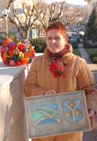

Turistička zajednica općine Matulji najavila bogate pusne aktivnosti
Drugi festival pusne hrani poprima međunarodni karakter, zvončarsku smotru otvara Stjepan Mesić, ponovo kreću pusni tanci u Hangaru...
 Matulji – Po atraktivnosti jedno od većih karnevalskih zbivanja na liburnijskom području, X. zvončarska smotra u Matuljima ove će se godine održati 5. velječe. Dakle, na Pusnu subotu koja je ujedno i Dan Općine. Okupit će šesnaest zvončarskih skupina, odnosno šest stotina zvončara koji će i ove godine zazvoniti s ukupno tisuću zvona. Posebnost ovogodišnje smotre je što je za taj dan svoj dolazak najavio i potvrdio Stjepan Mesić, predsjednik RH, koji bi trebao i otvoriti ovogodišnju jubilarnu smotru. Osim zvončarskih skupina među kojima će se na smotri prvi put pojaviti i nova zvončarska skupina s matuljskog područja – Frlanski zvončari, u programu će sudjelovati rogisti LD "Lane" i njihovi gosti iz Slovenije, zatim Folklorna skupina "Barban" iz Barbana, KUD "Učka" i klapa "Zvonejski kanturi," a višesatni program u centru Matulja vodit će Irena Grdinić i "Bele udovice," odnosno tandem Mario Lipovšek i Davor Jurkotić. U sklopu Smotre bit će održano i izvlačenje superpremije nagradne igre našeg lista koji je, uz Radio Rijeku, medijski pokrovitelj Smotre. Čitava manifestacija bit će prilika i za kupnju prigodnih karnevalskih suvenira, a ovogodišnji "veliki suvenir" smotre, reljef s logotipom općine i zvončarske smotre, autorski je rad akademske kiparice Tatjane Kostanjević.
Sve je to rečeno na tiskovnoj konferenciji koju je uoči starta karnevalskih zbivanja organizirala Turistička zajednica Općine Matulji.
Iako su pusta po starom običaju na Tri kralja digli mještani Muna i Žejana, službeni start karnevala je u ponedjeljak 17. siječnja – na Antonju. Toga dana osim što će pusta dignuti gotovo sva sela u našoj općini, a na Zvonećoj "će zatulit pusni rog," u centru Matulja ključevi Općine bit će predani "pusnen juden z Rukavca" budući da Rukavac ove godine vlada karnevalskim zbivanjima, rekla je Marijana Kalčić, predsjednica TZ Matulji, u najavi predstojećih maškaranih zbivanja. Pritom je naglasila da prošle godine započet Festival pusne hrani ove godine postaje još bogatiji pa će se u Hangaru 28. siječnja lokalni pusni specijaliteti ogledati s tipičnom karnevalskom hranom Italije, Istre i Gorskog kotara, odnosno gostujućih gradova – Saurisa, Buja i Čabra. Prvi put ove godine bit će u sklopu karnevalskih zbivanja održano i likovno natjecanje za učenike od petih do osmih razreda osnovnih škola iz Matulja, Brešca, Kastva, Opatije i Lovrana. Najbolje likovne radove, naravno, s motivima karnevala, TZ Matulji će nagraditi te zadržati pravo njihova korištenja za daljnju promociju maškara. Likovno natjecanje održat će se 22. siječnja, dok će se 23. siječnja prvi put održati "Maškarana biciklijada – po zvončarskeh puteh" kada će biciklisti prijeći predviđenu turu od tridesetak kilometara. "Maškarana gimkana" bit će održana po drugi put i to 29. siječnja, a u vremenu od 22. do 23. siječnja biti će u Brešcima održan i II. malorukometni maškarani turnir. Novina u ovogodišnjim pusnim aktivnostima je da će se u vremenu od 1. do 5. veljače u izlozima prodavaonica u centru Matulja izložiti najzanimljiviji i najoriginalniji darovani i dobiveni pokloni u povodu ranije održanih zvončarskih smorti, a oživjet će ponovo i "pusni tanci va Hangare" koji će se održavati svake od tri karnevalske subote. Uz to, "pusni tanci" bit će u Domu Jušići i Domu Permani.
Dolores Juretić Biondić
January 8, 2005
© 2005 Novi List